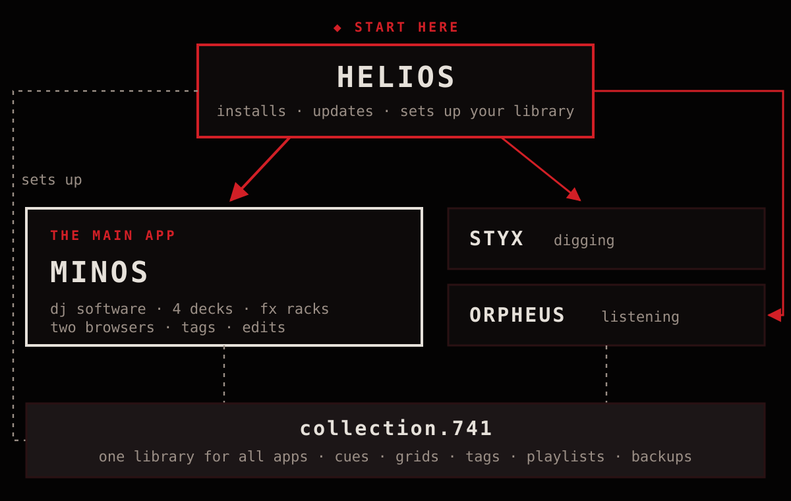
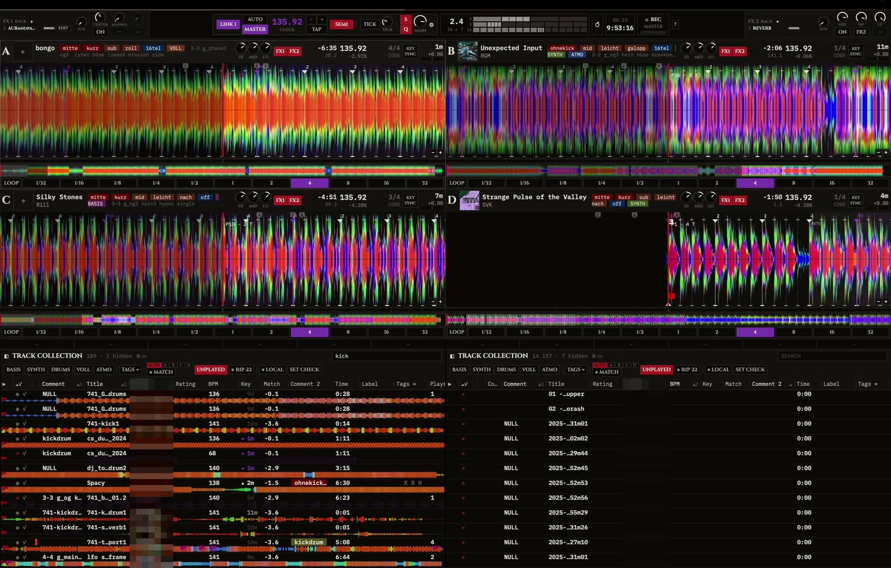

HELIOS-741
installer, updater and library setup for the 741 tools. macos.
◆ START HERE
HELIOS is the software center of 741. install it once: it sets up your library, brings in your existing collection, and installs and updates MINOS, STYX and ORPHEUS.

◆ WHY INSTALL THROUGH HELIOS
- one library for all apps. MINOS, STYX and ORPHEUS share one collection file. HELIOS creates it and connects every app to it, so a cue you set in one app is there in the next
- your collection comes with you. HELIOS imports your existing .nml or .xml collection: tracks, cues, grids, playlists. you don't start from zero
- backups from day one. hourly, weekly, monthly, yearly. set up for you, nothing to configure
- updates without thinking. every app stays current, the download is checked before install, the last 3 versions are kept for rollback
- files stay found. if you move or rename music folders, REPAIR finds the files again and relinks them
◆ INSTALL IN 5 STEPS
download HELIOS-741.dmg, open it, drag HELIOS into Applications.
start HELIOS. if macos blocks it: system settings -> privacy & security -> OPEN ANYWAY.
choose a home for your library: a google drive folder (default My Drive/741, same library on every mac) or a local folder. already set up on another mac? pick that home and HELIOS adopts it.
bring in your collection: pick your .nml or .xml file. HELIOS shows a plan first, then writes the library once you confirm. details below.
pick your apps: MINOS, and optionally STYX and ORPHEUS. HELIOS installs them. open MINOS, your tracks are already there.
◆ YOUR COLLECTION
one file: collection.741
tracks, cues, grids, tags, playlists, sets and app settings live in one file in your home folder. all 741 apps read and write it. only a small background service writes to it, so two apps never overwrite each other.
import from your current software
- reads an .nml or .xml collection once. your original file is never changed
- a plan comes first: number of tracks and playlists, missing files, duplicates, warnings. the plan writes nothing
- after you confirm, HELIOS writes the library and reads it back to check it. optional: a copy of the source is kept under
imports/<date>/
your music files
- adopt: music stays where it is, the library points at it
- move: HELIOS moves it into one library folder. the old files are only removed after the copy is verified
nothing gets locked in
when you close, the library is exported back to .nml and .xml under exports/, so your other software keeps working with the same cues and playlists.
backups
automatic under backups/: hourly, weekly, monthly, yearly.
◆ APPS AND UPDATES

- MINOS · dj software. STYX · digging. ORPHEUS · player for listening
- channel per app: newest build (default), stable versions, own folder, or off
- no update while you play: HELIOS asks you to quit, or installs on the next quit
- HELIOS updates itself the same way
◆ REPAIR
checks every track: does the file exist, does it play. moved files are found again and relinked, cues and grids stay. runs in the background too, never while you play.
◆ THE 741 TOOLS
- HELIOS installer, updater, library setup
- MINOS dj software
- STYX digging
- ORPHEUS player for listening
◆ HELP
- setup guide slayer7411.github.io/HELIOS-741-releases/guide/
- bugs and ideas github issues